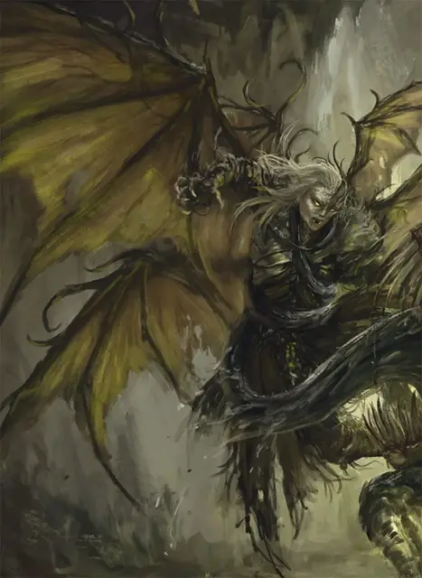

Мутирующий Гуманоид
Humanoid Mutate
Средняя Аберрация, любое мировоззрение

Класс Доспеха 14
Хиты 65 (10к8 + 20)
Скорость 30 футов, летая 30 футов
| мод | спас | ||
|---|---|---|---|
| СИЛ | 12 | +1 | +1 |
| ЛОВ | 18 | +4 | +4 |
| ТЕЛ | 14 | +2 | +2 |
| мод | спас | ||
|---|---|---|---|
| ИНТ | 11 | +0 | +0 |
| МДР | 13 | +1 | +1 |
| ХАР | 15 | +2 | +2 |
Навыки Восприятие +3, Скрытность +6
Сопротивление урону психическая энергия
Иммунитет к состояниям испуг, очарование
Чувства тёмное зрение 120 футов, пассивное Восприятие 13
Языки Общий, Телепатия 60 фт.
Опасность 4 (1100 опыта)
Бонус мастерства +2
Особенности
Чувствительность к свету. Находясь на солнечном свету, мутировавший совершает с помехой броски атаки.
Действия
Мультиатака. Мутировавший совершает два Безоружных удара или Кошмарных взрыва.
Безоружный удар. Рукопашная атака оружием: +6 к попаданию, досягаемость 5 футов, одна цель. Попадание: 7 (1к6 + 4) дробящего урона плюс 10 (3к6) урона психической энергией.
Кошмарный взрыв. Дальнобойная атака оружием: +6 к попаданию, дистанция 60 футов, одно существо. Попадание: 7 (2к6) урона психической энергией и цель должна преуспеть в спасброске Мудрости Сл 12, иначе она будет испугана до начала следующего хода мутировавшего.
Реакции
Оборонительный полет. Сразу после получения урона мутирующий летит на свою скорость. Это движение не провоцирует атак.
Описание
Существо, подвергшееся воздействию странной энергии Дальнего Предела, рискует развитием мутаций. Такое существо претерпевает метаморфозу, поскольку силы Дальнего Предела переписывают основы существования существа.
Любое существо может мутировать и трансформироваться, проявляя физические характеристики, связанные с Дальним Пределом. Некоторые существа мутируют после длительного воздействия энергии или магии Дальнего Предела, исходящей из этого странного плана. Другие намеренно меняют себя, стремясь принять ужасные силы, которым они поклоняются. Существа, которые становятся мутантами, часто необъяснимым образом возвращаются к своим предыдущим формам, как только влияние Дальнего Предела ослабевает.
Попытки принудительного преобразования существ по необъяснимым причинам терпят неудачу, хотя силы зла, такие как древняя империя свежевателей разума, провели много исследований по этой теме. На протяжении веков свежеватели разума пытались создать армии мутантов, которые пронеслись бы по Подземью. Однако их усилия всегда оказывались бесплодными, и в конце концов свежеватели разума отказались от своих планов.
Мутанты часто приобретают псионические способности, отращивают крылья, покрываются потусторонней слизью или проявляют другие тревожные черты.
Мутирующий гуманоид
Когда влияние Дальнего Предела затрагивает Гуманоидов, полученное существо становится сущим кошмаром. По телу этого мутанта беспорядочно растут многочисленные перепончатые крылья. Его кожа становится липкой и гладкой, как у саламандры.
Некоторые разумные мутриующие Гуманоиды сохраняют свою личность до того, как они оказались в Дальнем Пределе. Некоторые, движимые очарованием потусторонних сил, стремятся к этой трансформации, чтобы стать злобными пророками и предвестниками. Другие находят магические способы вернуться в прежнюю форму.